Carvalho Ribeiro Blog
Info
Categories
All
(17)
Comunicação
(7)
Demanda
(1)
Demanda ou problema
(1)
Exploração de dados
(5)
Modelos
(4)
Order By
Default
Title
Date - Oldest
Date - Newest
Author
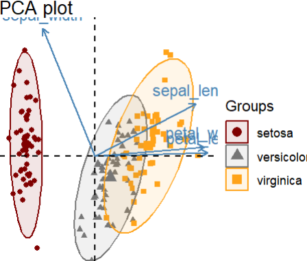
Interpretando Análise de componentes principais PCA
Exploração de dados
Envolve compreender como os dados originais são transformados e representados em um novo espaço de dimensões reduzidas.
Aug 15, 2024
Marcelo Carvalho dos Anjos
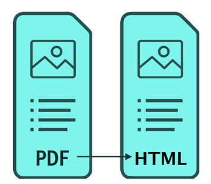
Impressão de tabelas em formatos pdf e html em Quarto documents
Comunicação
É a etapa onde é gerado os documentos em diferentes formatos
Aug 11, 2024
Marcelo Carvalho dos Anjos
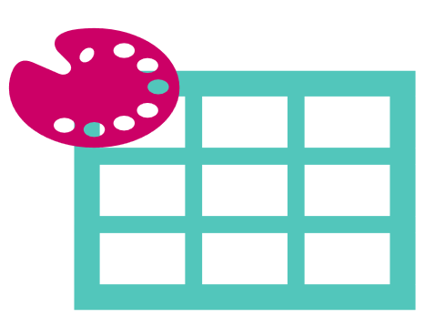
Formatando tabelas e dados usando themes e gtsummary package no R
Comunicação
São funções que criam presets de tabelas para criação de documentos técnicos.
Jun 16, 2024
Marcelo Carvalho dos Anjos
Formatar tabelas para publicar artigos no R com GT package
Comunicação
Facilitar a construção de tabelas em documentos técnicos e científicos.
May 6, 2024
Marcelo Carvalho dos Anjos
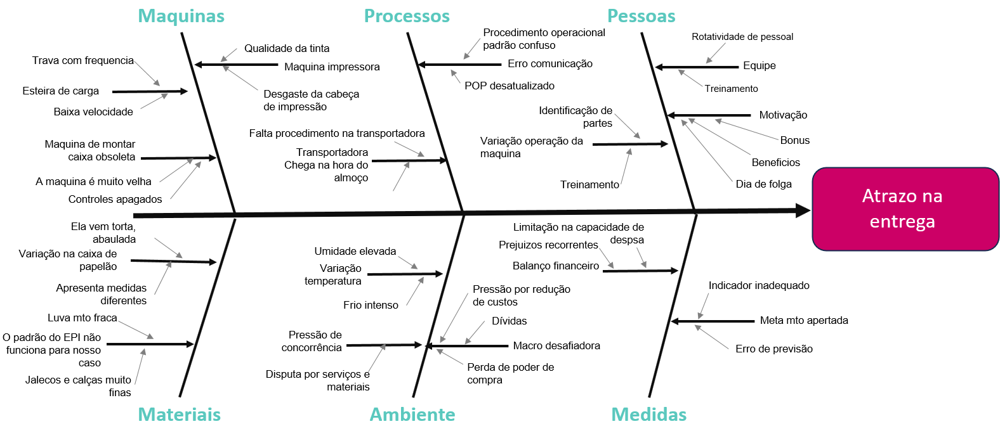
Diagrama de Causa e Efeito
Demanda
Estimular a interação entre as pessoas, processo, instrumentos, ambiente e sistemas na busca de possíveis causas que podem unfluenciar ou gerar um determinado efeito.
Jan 28, 2024
Marcelo Carvalho dos Anjos
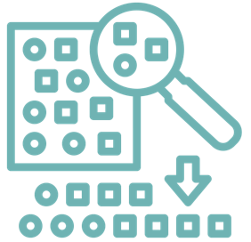
Modelo preditivo | Amostra e reamostragens
Funções úteis split de dados e resample que serão usados na validação e ajuste de modelos
Modelos
Vídeo tema para este post em Amostra e reamostragem com Rsample
Sep 29, 2023
Marcelo Carvalho dos Anjos
Comunicar trabalhos técnicos em apresentações no R com Quarto
Comunicar resultados no formato apresentação de slides em reveljs
Comunicação
Vídeo tema para este post em Comunicar trabalhos técnicos em apresentações no R com Quarto
Jul 16, 2023
Marcelo Carvalho dos Anjos
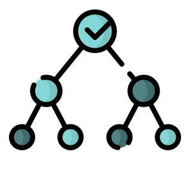
Modelo preditivo | tidymodels decision tree rpart diabetes
Modelo machine learning de árvore de decisão usando rpart, tidymodels e dados de diabetes
Modelos
Vídeo tema para este post em Tidymodels decision tree model diabetes - rpart
Nov 29, 2022
Marcelo Carvalho dos Anjos
Como comunicar dados em artigos técnicos no R - Quarto
Comunicação
Em um contexto mais geral, seria o processo relativo a transação de dados e ou informações entre 2 ou mais agentes.
Oct 24, 2022
Marcelo Carvalho dos Anjos
Como construir gráficos para artigo técnico
Exploração de dados
Comunicação
Vídeo tema para este post em Como construir gráficos para artigo técnico
Sep 28, 2022
Marcelo Carvalho dos Anjos
Como construir tabela para artigo técnico - gtsummary
Comunicação
Tabela é um meio eficiente de representação e comunicação de dados tendo como características principais linhas, colunas, sumarizações e comparativos.
Sep 12, 2022
Marcelo Carvalho dos Anjos
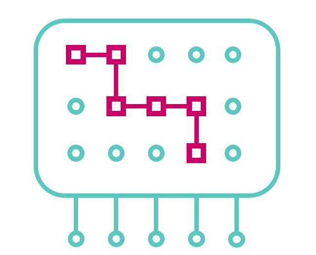
Como Identificar padrões em dados - gráfico de dispersão
Exploração de dados
Vídeo tema para este post em Como Identificar padrões em dados - gráfico de dispersão
Aug 28, 2022
Marcelo Carvalho dos Anjos
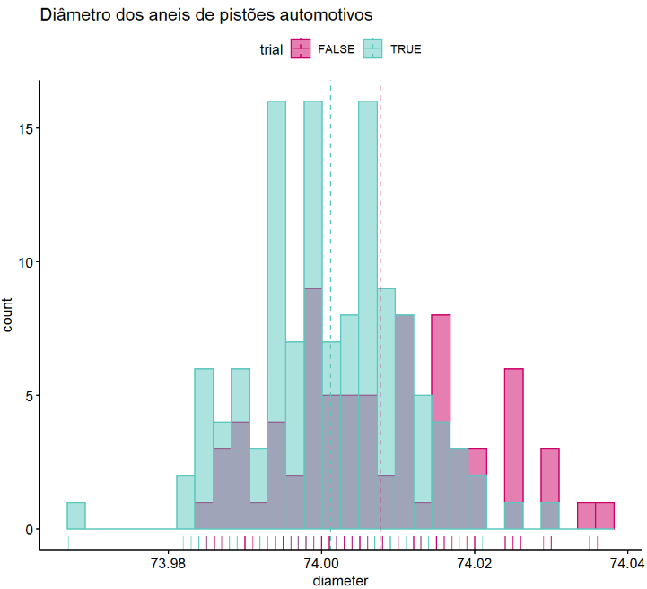
Como analisar distribuição em dados - histograma curva normal
Exploração de dados
Vídeo tema para este post em Como analisar distribuição em dados - histograma curva normal
Aug 21, 2022
Marcelo Carvalho dos Anjos
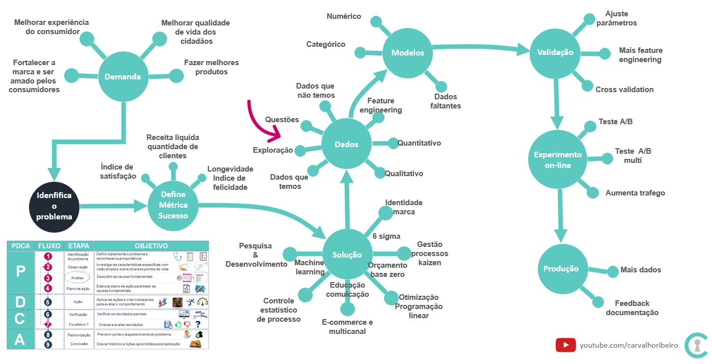
Como importar e visualizar dados - Titanic dataset parte1
Exploração de dados
Vídeo tema para este post Como importar e visualizar dados - Titanic dataset parte1
Aug 7, 2022
Marcelo Carvalho dos Anjos
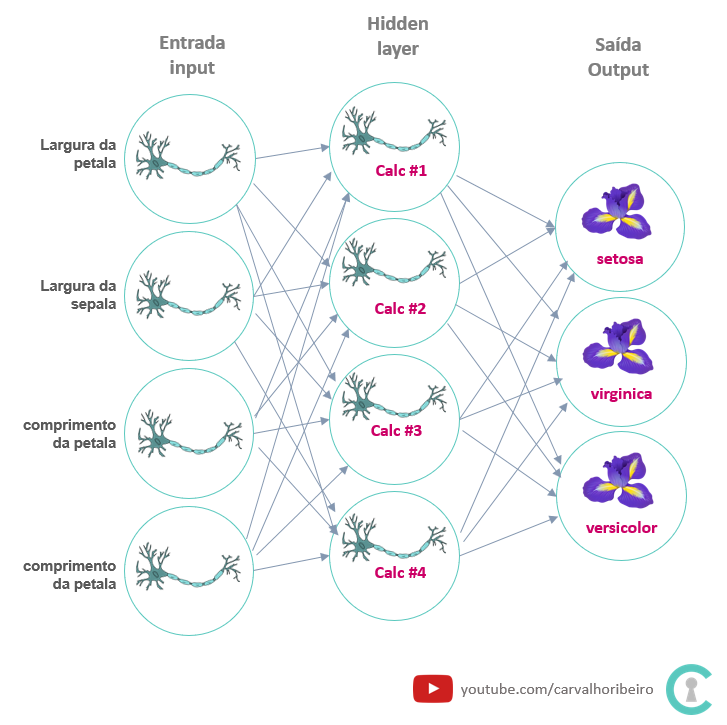
Modelo preditivo usando com rede neural
Modelos
Vídeo tema para este post Redes neurais artificiais no R com nnet package
Aug 6, 2022
Marcelo Carvalho dos Anjos
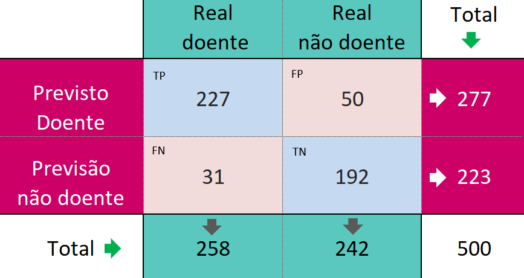
Avaliar resultados de modelo preditivo com matriz de confusão
Modelos
Vídeo tema para este post em Avaliar resultados de modelo preditivo com matriz de confusão
Aug 3, 2022
Marcelo Carvalho dos Anjos
Motivação para o blog
Demanda ou problema
Vídeo tema para este post Transição demográfcias Brasil e Japão
Aug 3, 2022
Marcelo Carvalho dos Anjos
No matching items